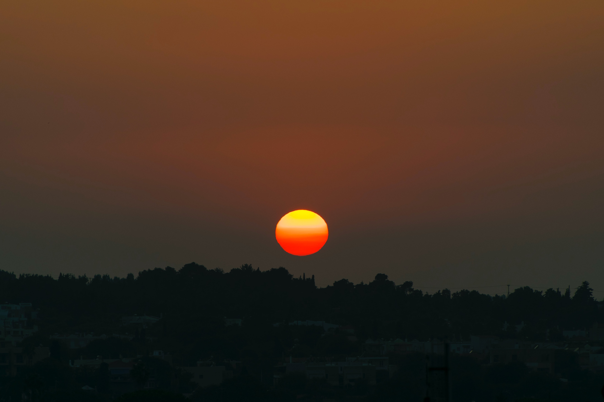

이제부터 진짜 웹페이지를 편집해보겠습니다.나는 수퍼맨보다 더 멋진 스파이더맨 이 될 것이야! 3개월안에 할 수 있을까?
3개월안에 하려면 매일매일 10시간씩 하면서 매달려야 할 것이다. 그렇지 않으면 나는 실패할 것이다.
어떤 웹페이지를 만들까? 내 손으로 만들어서 편집할 수 있어야 하는데 이제는 편집할 수 있을 것 같다. 누군가 소스만 처음 만들어서 준다면 내가 계속 고쳐나가면서 할 수 있을 것이다.
그래서 기분이 좋다. 처음에 아주 간단하게 만들어 달라고 하면 그 다음부터는 내가 살살 고쳐가면서 하면 되니까.어떤 것을 쓰고 싶으닞는 지금부터 생각을 천천히 해보자.
이제는 내가 맘대로 그림을 그려나갈 수 있다는 것이 기분이 좋다. 다음은 애국가입니다. 
동해물과 백두산이 마르고닳도록 하느님이 보우하사 우리나라만세. 무궁화 삼천리 화려강산.대한사람 대한으로 길이 보전하세.
이렇게 쓸 수 있다는게 기분이 좋군요. 음하하하.
지금까지 애국가와 관련된 이야기였습니다.